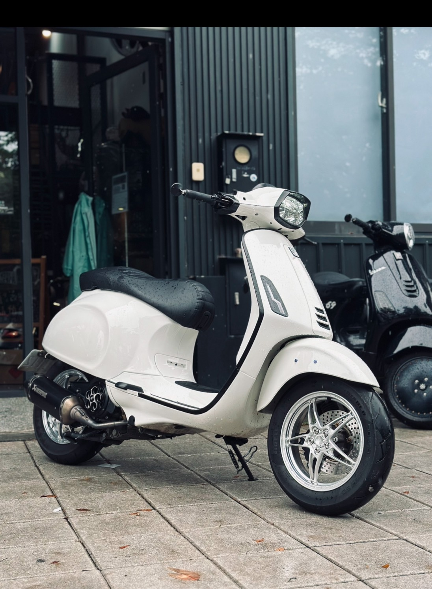

我現在是高科大的大四學生，快畢業了，準備迎接新的生活！
我超愛改機車，特別是復古的偉士牌，改一改就像幫它換新靈魂，很有成就感。
我也喜歡打籃球，跟朋友在球場上跑一跑、流汗，整個人都放鬆了。
我家還有一隻黑柴狗，牠很活潑，有時候調皮，但也很黏人，是我每天回家最期待的溫暖。
平常我也喜歡到外面走走，尤其是去海邊，吹吹海風、放空一下，會讓我覺得心情變得很好。
音樂也是我生活的一部分，我很喜歡聽歐美的嘻哈和西洋音樂，節奏感很強，聽了會有動力。
朋友們說我是一個蠻隨和、講話實在的人，平常就喜歡簡單自在的生活，有時候熱血、有時候也很 chill。
